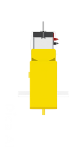
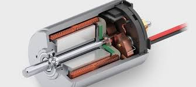
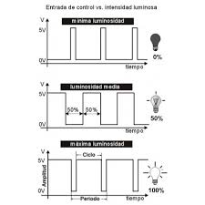
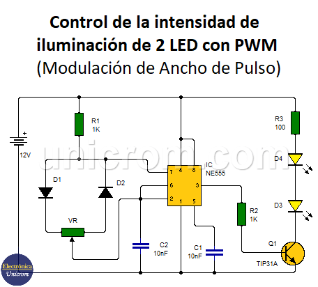

Día 3: Creación de circuito básico de movimiento con motores DC.
2. Movimiento con Motores DC
2.1 Fundamentación teórica
Qué son los motores DC
Los motores DC (motores de corriente directa) son dispositivos electromecánicos que convierten la energía eléctrica de corriente continua en energía mecánica, generando movimiento rotatorio. Estos motores son ampliamente utilizados en aplicaciones donde se requiere un control preciso de velocidad y dirección.
Características principales:

1. Funcionamiento simple: Operan mediante la interacción de un campo magnético y una corriente eléctrica en un conductor, produciendo torque.
2. Velocidad ajustable: La velocidad del motor puede controlarse variando la tensión o corriente que se le suministra.
3. Fácil inversión de giro: Cambiar la polaridad de la corriente en el motor permite invertir la dirección de rotación.
Aplicaciones comunes:- Robótica.
- Ventiladores y bombas.
- Juguetes motorizados.
- Electrodomésticos como licuadoras y taladros.

Qué son los controles PWM

Los controles PWM (Modulación por Ancho de Pulso) son una técnica utilizada para regular la cantidad de energía suministrada a una carga mediante la modulación del ciclo de trabajo de una señal digital. En otras palabras, el control PWM ajusta la proporción de tiempo en que una señal está en alto (ON) frente al tiempo en que está en bajo (OFF), dentro de un periodo constante.
- Principio básico:
- Ciclo de trabajo (Duty Cycle): Es el porcentaje del tiempo que la señal está en alto durante un ciclo completo.
- 100%: Señal completamente ON.
- 50%: Señal ON la mitad del tiempo.
- 0%: Señal completamente OFF.